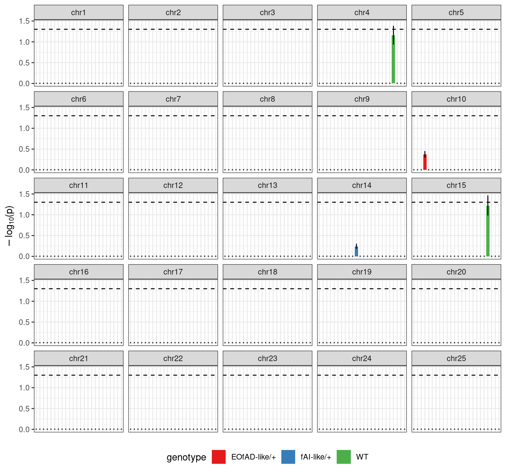

The motivation for performing an allele specific expression (ASE) analysis stems from the idea that selecting for a particular chromosome (i.e. the mutant chromosome) within an experimental group also selects for any expression quantitative trait loci (eQTLs) that exist on that chromosome. Therefore exists the possibility of differences in transcript abundances between groups tested for differential expression due to different sets of allelic expression characteristics and separate from the effect of the mutation. This would not be a problem in isogenic organisms such as mice, but zebrafish are anything but isogenic. If the eQTL idea is true, one would expect to see a number of differentially expressed genes on the same chromosome of the mutation, which is indeed the case in this dataset. However, if not true, and the observations are caused by the effect of the mutation, an explanation must describe the functional relationship between genes on the same chromosome as the mutation. One such possibility is that functionally related genes tend to cluster on chromosomes through evolutionary time because it allows for advantageous allelic combinations to remain together due to the suppressed chance for separation through recombination or chromosomal segregation.
The aim of this analysis is to therefore tease apart these two possibilities to the best ability with the available RNA-seq data. In particular, allele specific expression testing will be used to assess:
suppressPackageStartupMessages({
## Common
library(tidyverse)
library(magrittr)
library(future.apply)
library(here)
library(AnnotationHub)
library(purrr)
library(scales)
library(kableExtra)
library(tictoc)
library(ggrepel)
library(RColorBrewer)
library(ggpubr)
library(pander)
library(rmarkdown)
## Project specific
library(statmod)
library(fgsea)
})if (interactive()) setwd(here::here())
theme_set(theme_bw())
cores <- availableCores() - 2
source("~/bioinformatics/bioToolkit/lbFuncs.R")
## Select base directory for the project
projDir <- here()
# projDir <- "/hpcfs/users/a1647910/210408_psen1_fADfAI_snv"An EnsDb object was obtained for Ensembl release 101 from which gene and exon information was extracted for annotation required in the analysis.
ah <- AnnotationHub() %>%
subset(species == "Danio rerio") %>%
subset(rdataclass == "EnsDb")
ensDb <- ah[["AH83189"]] ## Ens101
genes <- genes(ensDb)
mcols(genes) <- mcols(genes)[
c("gene_id", "gene_name", "gene_biotype", "entrezid")
]
exons <- exonsBy(ensDb, by = "gene")
drChrs <- seq(1:25)As the chromosomal localisation of genes is of interest, list and dataframe objects containing gene and chromosome information were generated.
chrGenes <- genes %>%
as_tibble() %>%
dplyr::filter(seqnames %in% drChrs) %>%
droplevels() %>%
split(.$seqnames) %>%
lapply(pull, gene_id) %>%
set_names(paste0("chr", names(.)))chrGenes_df <- chrGenes %>%
lapply(list) %>%
as_tibble() %>%
pivot_longer(cols = everything(), names_to = "chr", values_to= "feat") %>%
unnest(feat)metadata <- read_csv(file.path(projDir, "files/samples.csv")) %>%
dplyr::select(-sample) %>%
dplyr::rename(sample = basename, genotype = Genotype) %>%
## We need some sample aliases that follow R naming conventions
mutate(
alias = c(
paste0(rep("fAD", 7), seq(1, 7)),
paste0(rep("fAI", 8), seq(1, 8)),
paste0(rep("wt", 9), seq(1, 9))
)
)
metadata$genotype <- fct_relevel(
metadata$genotype,
c("EOfAD-like/+", "fAI-like/+", "WT")
)
genoCols <- metadata$genotype %>%
levels() %>%
length() %>%
brewer.pal("Set1") %>%
setNames(levels(metadata$genotype))
compCols <- genoCols[1:2]metadata %>%
dplyr::rename(
Sample = sample, `Fish ID` = fish_id, `Batch Killed` = batch_killed,
`Genotype 1` = genotype, `Genotype 2` = Genotype_2, Alias = alias
) %>%
kable(
align = "l",
caption = "Sample metadata"
) %>%
kable_styling(
bootstrap_options = c("striped", "hover", "condensed", "responsive")
)| Sample | Fish ID | Batch Killed | Sex | RINe | Genotype 1 | Genotype 2 | Alias |
|---|---|---|---|---|---|---|---|
| 7_KB_B12 | 27 | 6 | F | 9.3 | EOfAD-like/+ | T428del/+ | fAD1 |
| 22_KB_C6 | 30 | 7 | F | 9.6 | EOfAD-like/+ | T428del/+ | fAD2 |
| 16_KB_C12 | 40 | 8 | F | 9.4 | EOfAD-like/+ | T428del/+ | fAD3 |
| 8_KB_B3 | 46 | 9 | F | 9.2 | EOfAD-like/+ | T428del/+ | fAD4 |
| 19_KB_C3 | 29 | 6 | M | 9.5 | EOfAD-like/+ | T428del/+ | fAD5 |
| 10_KB_B6 | 50 | 9 | M | 9.3 | EOfAD-like/+ | T428del/+ | fAD6 |
| 4_KB_A6 | 9 | 3 | M | 9.0 | EOfAD-like/+ | T428del/+ | fAD7 |
| 2_KB_A11 | 12 | 4 | F | 8.7 | fAI-like/+ | W233fs/+ | fAI1 |
| 12_KB_B8 | 22 | 5 | F | 9.3 | fAI-like/+ | W233fs/+ | fAI2 |
| 15_KB_C11 | 45 | 9 | F | 9.4 | fAI-like/+ | W233fs/+ | fAI3 |
| 18_KB_C2 | 47 | 9 | F | 9.2 | fAI-like/+ | W233fs/+ | fAI4 |
| 9_KB_B5 | 21 | 4 | M | 9.4 | fAI-like/+ | W233fs/+ | fAI5 |
| 6_KB_B11 | 26 | 6 | M | 9.4 | fAI-like/+ | W233fs/+ | fAI6 |
| 24_KB_C8 | 44 | 9 | M | 9.8 | fAI-like/+ | W233fs/+ | fAI7 |
| 21_KB_C5 | 49 | 9 | M | 9.5 | fAI-like/+ | W233fs/+ | fAI8 |
| 5_KB_A7 | 19 | 4 | F | 9.1 | WT | WT | wt1 |
| 1_KB_A10 | 25 | 5 | F | 9.4 | WT | WT | wt2 |
| 23_KB_C7 | 36 | 7 | F | 9.7 | WT | WT | wt3 |
| 3_KB_A1 | 4 | 1 | F | 9.4 | WT | WT | wt4 |
| 17_KB_C1 | 34 | 7 | M | 9.0 | WT | WT | wt5 |
| 20_KB_C4 | 35 | 7 | M | 9.3 | WT | WT | wt6 |
| 14_KB_C10 | 37 | 8 | M | 9.3 | WT | WT | wt7 |
| 13_KB_B9 | 54 | 10 | M | 9.3 | WT | WT | wt8 |
| 11_KB_B7 | 55 | 10 | M | 9.1 | WT | WT | wt9 |
genotypes <- unique(metadata$genotype) %>%
as.vector() %>%
set_names(., .)
fad <- metadata$alias %>%
str_detect("fAD")
fai <- metadata$alias %>%
str_detect("fAI")
wt <- metadata$alias %>%
str_detect("WT")Allele specific expression testing was performed for each sample at the gene-level with GeneiASE software. Genes were classified as showing allele specific expression (ASE) if they had a FDR-adjusted p-value < 0.05.
files <- list.files(
file.path(projDir, "13_geneiase/2_ase"),
full.names = TRUE
)
samples <- basename(files) %>%
str_remove(".static.pval.tsv")
topASE <- lapply(files, function(x){
sample <- basename(x) %>%
str_remove(".static.pval.tsv")
read_tsv(x) %>%
mutate(
sig = fdr < 0.05,
sample = sample
) %>%
left_join(metadata[,c("sample", "alias", "genotype")]) %>%
dplyr::arrange(fdr) %>%
mutate(ASE = fdr < 0.05)
}) %>%
set_names(metadata$alias[match(samples, metadata$sample)]) %>%
.[metadata$alias]aseRC <- readRDS(here("files/aseRC.Rds"))
aseRCByGene <- readRDS(here("files/aseRCByGene.Rds")) %>%
sapply(dplyr::select, gene, everything(), simplify = FALSE)nASE <- bind_rows(topASE) %>%
group_by(alias, sample, genotype) %>%
summarise(nASE = sum(ASE), total = n()) %>%
ungroup() %>%
mutate(
alias = factor(alias),
propASE = nASE / total
)Between 327 and 557 genes were classified as showing ASE across all samples, which accounted for between 4.53% and 7.14% of the total genes tested.
nASE %>%
ggplot(aes(alias, nASE, fill = genotype)) +
geom_bar(stat = "identity", colour = "black") +
scale_fill_manual(values = genoCols) +
scale_y_continuous(breaks = seq(0, 500, 100)) +
labs(
x = "Sample",
y = "Number of ASE genes",
fill = "Genotype"
) +
theme(
axis.text.x = element_text(angle = 270, vjust = 0.5, hjust = 0)
)The number of genes classified as showing significant ASE basedon an FDR-adjusted p-value cut-off of 0.05. The number of genes showing ASE was fairly consistent across all samples and genotypes.
Previously analysed different expression testing results were loaded as a list of topTables.
topDE <- readRDS(file.path(projDir, "files/topTables.Rds")) %>%
set_names(c("fAD", "fAI"))The fAD vs WT comparison showed 10 DE genes.
topDE[[1]] %>%
dplyr::filter(DE) %>%
dplyr::select(geneID = gene_id, symbol = gene_name, chromosome, logFC, logCPM, FDR, bonfP) %>%
mutate(
logCPM = formatC(logCPM, digits = 2, format = "f"),
logFC = formatC(logFC, digits = 2, format = "f"),
FDR = formatC(FDR, digits = 2, format = "e"),
bonfP = formatC(bonfP, digits = 2, format = "e"),
) %>%
kable(
align = "l",
caption = paste(
"The", nrow(.), "differentially expressed genes for Alzheimer's genotype",
"in comparison to wildtype"
)
) %>%
kable_styling(
bootstrap_options = c("striped", "hover", "condensed", "responsive")
)| geneID | symbol | chromosome | logFC | logCPM | FDR | bonfP |
|---|---|---|---|---|---|---|
| ENSDARG00000078322 | col12a1a | 17 | 1.87 | 3.83 | 1.73e-16 | 1.73e-16 |
| ENSDARG00000093378 | si:ch211-235i11.5 | 17 | 0.63 | 2.96 | 2.56e-07 | 5.11e-07 |
| ENSDARG00000079324 | ano9b | 7 | 1.37 | -1.19 | 2.35e-04 | 7.05e-04 |
| ENSDARG00000020448 | adi1 | 17 | 0.54 | 2.81 | 1.69e-03 | 6.74e-03 |
| ENSDARG00000092191 | CR318588.1 | 18 | 3.31 | 2.45 | 5.15e-03 | 2.68e-02 |
| ENSDARG00000001993 | myhb | 6 | 4.04 | 2.38 | 5.15e-03 | 3.09e-02 |
| ENSDARG00000088298 | si:ch211-235i11.4 | 17 | 0.34 | 3.57 | 7.51e-03 | 5.26e-02 |
| ENSDARG00000094719 | CR318588.3 | 18 | 2.05 | 2.71 | 1.18e-02 | 9.46e-02 |
| ENSDARG00000088507 | znf982 | 17 | 0.39 | 2.28 | 4.94e-02 | 4.91e-01 |
| ENSDARG00000056065 | mov10b.2 | 8 | 1.37 | -1.78 | 4.94e-02 | 4.94e-01 |
The fAI vs WT comparison showed 6 DE genes.
topDE[[2]] %>%
dplyr::filter(DE) %>%
dplyr::select(geneID = gene_id, symbol = gene_name, chromosome, logFC, logCPM, FDR, bonfP) %>%
mutate(
logCPM = formatC(logCPM, digits = 2, format = "f"),
logFC = formatC(logFC, digits = 2, format = "f"),
FDR = formatC(FDR, digits = 2, format = "e"),
bonfP = formatC(bonfP, digits = 2, format = "e"),
) %>%
kable(
align = "l",
caption = paste(
"The", nrow(.), "differentially expressed genes for Acne Inversa genotype",
"in comparison to wildtype"
)
) %>%
kable_styling(
bootstrap_options = c("striped", "hover", "condensed", "responsive")
)| geneID | symbol | chromosome | logFC | logCPM | FDR | bonfP |
|---|---|---|---|---|---|---|
| ENSDARG00000004870 | psen1 | 17 | -0.78 | 5.33 | 4.11e-70 | 4.11e-70 |
| ENSDARG00000005179 | dglucy | 17 | -0.97 | 5.01 | 3.84e-05 | 7.68e-05 |
| ENSDARG00000061758 | sh3pxd2ab | 17 | -3.04 | 1.06 | 2.03e-04 | 6.08e-04 |
| ENSDARG00000067665 | fam167aa | 17 | -3.40 | 0.32 | 3.51e-04 | 1.40e-03 |
| ENSDARG00000105453 | kcnk17 | 17 | -1.52 | -1.00 | 3.23e-03 | 1.61e-02 |
| ENSDARG00000094098 | si:ch211-278p9.3 | 17 | -2.29 | -2.34 | 4.28e-02 | 2.57e-01 |
For each differentially expressed gene, ASE results were assessed across each sample. Due to the requirements for each gene to possess at least one heterozygous single nucleotide variant (SNV) in order to be tested for ASE, not all detected genes were subject to the analysis. Furthermore, a substantial number of genes containing het-SNVs were excluded from ASE testing as they did not pass quality control requirements. Therefore it is important to distinguish whether a gene was tested and did not show ASE opposed to not being tested at all. For each DE gene, samples were assigned to one of three categories:
deGenes <- sapply(topDE, dplyr::filter, DE, simplify = FALSE)deAseOverlap <- sapply(deGenes, function(x){
lapply(topASE, function(y){
dplyr::select(x, feat = gene_id, symbol = gene_name, chromosome) %>%
left_join(y[,c("feat", "sample", "genotype", "ASE")])
}) %>%
bind_rows() %>%
group_by(feat, ASE) %>%
tally() %>%
ungroup() %>%
pivot_wider(names_from = ASE, values_from = n, values_fill = 0) %>%
dplyr::select(gene = feat, ASE = `TRUE`, no_ASE = `FALSE`, not_tested = `NA`)
}, simplify = FALSE)Alzheimer’s DE genes:
deAseOverlap$fAD %>%
kable(
align = "l",
caption = paste(
"The number of samples that were tested and showed ASE, tested and did",
"not show ASE, or not tested at all for each differentially expressed",
"gene in the Alzheimer's vs wildtype comparison"
)
) %>%
kable_styling(
bootstrap_options = c("striped", "hover", "condensed", "responsive")
)| gene | ASE | no_ASE | not_tested |
|---|---|---|---|
| ENSDARG00000001993 | 0 | 0 | 24 |
| ENSDARG00000020448 | 0 | 16 | 8 |
| ENSDARG00000056065 | 0 | 0 | 24 |
| ENSDARG00000078322 | 0 | 18 | 6 |
| ENSDARG00000079324 | 0 | 0 | 24 |
| ENSDARG00000088298 | 0 | 8 | 16 |
| ENSDARG00000088507 | 0 | 8 | 16 |
| ENSDARG00000092191 | 1 | 11 | 12 |
| ENSDARG00000093378 | 5 | 3 | 16 |
| ENSDARG00000094719 | 0 | 23 | 1 |
Acne Inversa DE genes:
deAseOverlap$fAI %>%
kable(
align = "l",
caption = paste(
"The number of samples that were tested and showed ASE, tested and did",
"not show ASE, or not tested at all for each differentially expressed",
"gene in the Acne Inversa vs wildtype comparison"
)
) %>%
kable_styling(
bootstrap_options = c("striped", "hover", "condensed", "responsive")
)| gene | ASE | no_ASE | not_tested |
|---|---|---|---|
| ENSDARG00000004870 | 0 | 16 | 8 |
| ENSDARG00000005179 | 5 | 15 | 4 |
| ENSDARG00000061758 | 0 | 0 | 24 |
| ENSDARG00000067665 | 0 | 0 | 24 |
| ENSDARG00000094098 | 0 | 0 | 24 |
| ENSDARG00000105453 | 0 | 0 | 24 |
Unfortunately due to the large amounts of samples that could not be examined for overlap of DE and ASE data, no conclusions could be made regarding the ability for ASE to affect DE results.
While no conclusions were achieved to address the potential for ASE to impact differential expression testing in an undesired manner, more general patterns of ASE were assessed through enrichment testing. Two different methods were set up to analyse if ASE is enriched on the chromosome that was selected for:
For each chromosome within each sample, the entire set of detected genes tested for ASE were classified by belonging to the chromosome and showing ASE.
fisherRes <- bind_rows(topASE) %>%
left_join(chrGenes_df) %>%
group_by(sample, chr) %>%
summarise(ase_chr = sum(ASE), noAse_chr = sum(!ASE)) %>%
group_by(sample) %>%
mutate(
ase_notChr = sum(ase_chr) - ase_chr,
noAse_notChr = sum(noAse_chr) - noAse_chr
) %>%
ungroup() %>%
mutate(
fisherTest = pmap(
## Setup list input to pmap in order that will construct a correct matrix
list(ase_chr, ase_notChr, noAse_chr, noAse_notChr),
~ fisher.test(matrix(c(..1, ..2, ..3, ..4), ncol = 2))
),
fisher.p = vapply(
fisherTest,
function(x){x$p.value},
numeric(1)
),
fdr.p = p.adjust(fisher.p, method = "fdr"),
bonf.p = p.adjust(fisher.p, method = "bonf")
) %>%
left_join(metadata[,c("sample", "genotype")])This was represented as a 2x2 contingency table for enrichment testing using Fisher’s exact test. An example of a contingency table for chromosome 17 of sample 7_KB_B12 (EOfAD-like/+ genotype) is shown below:
dplyr::filter(fisherRes, sample == "7_KB_B12" & chr == "chr17") %>%
with(
matrix(c(ase_chr, ase_notChr, noAse_chr, noAse_notChr), ncol = 2)
) %>%
set_rownames(c("Chr 17", "Not Chr 17")) %>%
set_colnames(c("ASE", "No ASE")) %>%
pander()| ASE | No ASE | |
|---|---|---|
| Chr 17 | 17 | 323 |
| Not Chr 17 | 453 | 7181 |
fisherRes %>%
mutate(
sample = factor(sample, levels = metadata$sample),
chr = factor(chr, levels = str_sort(unique(chr), numeric = TRUE))
) %>%
ggplot(aes(sample, -log10(fdr.p), fill = genotype)) +
geom_bar(stat = "identity", position = "dodge", colour= "black", width = 0.7) +
geom_hline(yintercept = -log10(0.05), linetype = "dashed", ) +
scale_fill_manual(values = genoCols) +
labs(
title = "Chromosomal enrichment of genes showing ASE",
x = "Sample",
y = log10plab,
fill = "Genotype") +
theme(
axis.text.x = element_blank(),
axis.ticks.x = element_blank(),
legend.position = "bottom"
) +
facet_wrap(~chr)Results from Fisher’s exact test for enrichment of ASE genes by chromosome. The -log10 FDR-adjusted p-value is show for each sample, which are coloured by genotype. Each chromosome is faceted for simpler viewing. The dotted line represents a FDR-adjust p-value of 0.05.
As an alternative approach, GSEA was performed using gene sets defined based on the chromosome each gene is located.
The first step for performing GSEA involved creating a ranked list . The methodology that GeneiASE uses for calculating p-values posed two issues when constructing a ranked list:
wilsonConf <- function(p.vals, conf.level = 0.95){
p <- mean(p.vals)
n <- length(p.vals)
alpha <- (1 - conf.level)
alpha2 <- alpha / 2
z <- qnorm(1 - alpha2)
z2 <- z * z
p1 <- p + 0.5 * z2/n
p2 <- z * sqrt((p * (1 - p) + 0.25 * z2/n)/n)
p3 <- 1 + z2/n
lcl <- (p1 - p2)/p3
ucl <- (p1 + p2)/p3
res.wilson <- tibble(
mean.p = p,
lower = lcl,
upper = ucl,
n = n,
sig = mean.p < alpha
)
return(res.wilson)
}bonfConf <- function(adj.p.val, n, n.bonf, conf.level = 0.95, limit = c("lower", "upper")){
alpha <- ((1 - conf.level) / n.bonf)
alpha2 <- alpha / 2
z <- qnorm(1 - alpha2)
z2 <- z * z
p1 <- adj.p.val + 0.5 * z2/n
p2 <- z * sqrt((adj.p.val * (1 - adj.p.val) + 0.25 * z2/n)/n)
p3 <- 1 + z2/n
lcl <- (p1 - p2)/p3
ucl <- (p1 + p2)/p3
if (limit == "lower"){return(lcl)}
if (limit == "upper"){return(ucl)}
}permRanks <- function(topASE){
topASE[,c("feat", "fdr")] %>%
mutate(
fdr = ifelse(fdr == 0, 0.000001, fdr),
stat = -log10(fdr)
) %>%
split(f = .$stat) %>%
lapply(function(x){
pull(x, feat) %>%
sample(length(.), replace = FALSE)
}) %>%
unlist(use.names = FALSE) %>%
enframe(name = NULL, value = "geneid") %>%
mutate(stat = seq(1:nrow(.))) %>%
with(structure(stat, names = geneid)) %>%
rev()
}perms <- 500
fgseaFile <- paste0(
here(),
"/files/fgsea_",
perms,
"perms.Rds"
)## This code chunk has a lengthy run-time and will not run if the object has already been saved
## Due to its large size the object remains on the HPC system
## Across 6 threads it takes 1-2 hours to complete
if (!file.exists(fgseaFile)) {
plan(list(tweak(multisession, workers = cores), sequential))
ranks <- future_sapply(1:perms, function(...){
future_sapply(topASE, permRanks, future.seed = 17)
}, future.seed = 17) %>%
t() %>%
as_tibble()
fgsea <- future_lapply(as.list(ranks), function(x){
future_lapply(x, function(y){
fgseaMultilevel(chrGenes, y, scoreType = "pos", eps = 0)
}, future.seed = 17)
}, future.seed = 17) %>%
set_names(colnames(ranks))
saveRDS(fgsea, fgseaFile)
plan(sequential)
}fgsea <- readRDS(fgseaFile)pvals <- lapply(fgsea, function(x){
lapply(seq_along(x), function(y){
x[[y]][,c("pathway", "padj")] %>%
dplyr::rename(!!as.character(y) := padj)
}) %>%
purrr::reduce(left_join) %>%
column_to_rownames("pathway") %>%
t() %>%
as_tibble()
})mean <- lapply(pvals, function(sample){
chrList <- as.list(sample)
lapply(seq_along(chrList), function(x){
chr <- names(chrList)[x]
wilsonConf(chrList[[x]]) %>%
mutate(chromosome = as.factor(chr))
}) %>%
bind_rows() %>%
dplyr::select(chromosome, everything()) %>%
mutate(
adj.mean.p = p.adjust(mean.p, method = "bonf"),
adj.lower = bonfConf(adj.mean.p, n, length(adj.mean.p), limit = "lower"),
adj.upper = bonfConf(adj.mean.p, n, length(adj.mean.p), limit = "upper")
)
}) lapply(seq_along(mean), function(ind){
x <- mean[[ind]]
x %>%
mutate(
sample = names(mean)[ind],
chromosome = fct_relevel(chromosome, str_sort(chromosome, numeric = TRUE))
)
}) %>%
bind_rows() %>%
left_join(metadata[,c("alias", "genotype")], by = c("sample" = "alias")) %>%
ggplot(aes(sample, -log10(adj.mean.p))) +
geom_bar(stat = "identity", aes(fill = genotype)) +
geom_errorbar(aes(
ymax = -log10(adj.lower),
ymin = -log10(adj.upper)
), width = 0.2) +
geom_hline(yintercept = -log10(0.05), linetype = "dashed") +
facet_wrap(~ chromosome) +
theme(
axis.text.x = element_blank(),
axis.ticks.x = element_blank(),
axis.title.x = element_blank(),
legend.position = "bottom"
) +
scale_fill_manual(values = genoCols) +
labs(y = log10plab)